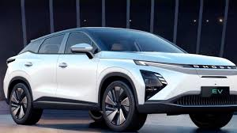
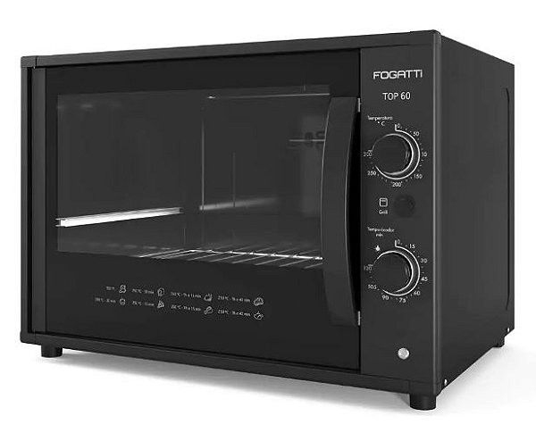
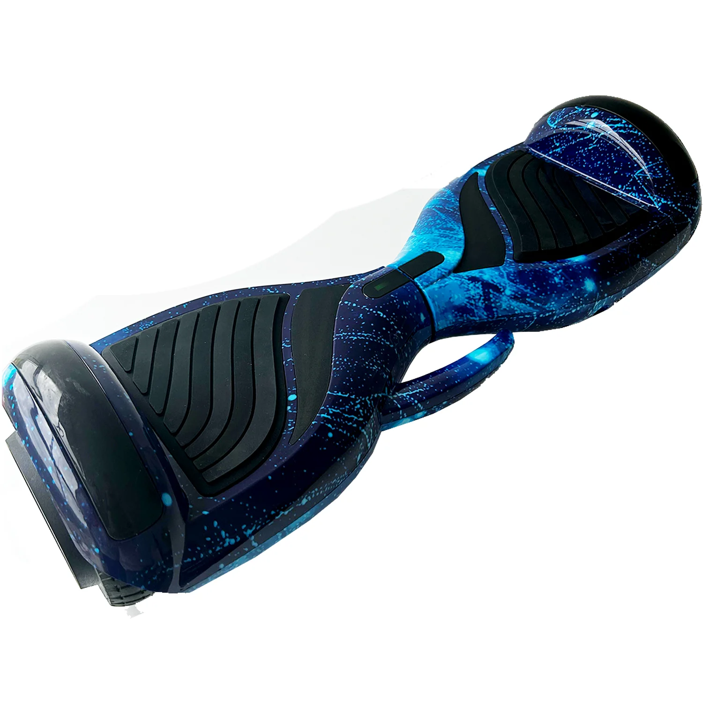
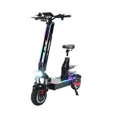

EcoTech
Nossos produtos:

Carro elétrico
É um carro totalmento movido a energia elétrica e que não prejudica o meio ambiente.

Forno elétrico
É um forno totalmente sustentável pois faz a mesma coisa que um forno a gás somente substituindo o gás por energia elétrica.

Hoverboard
É um skate elétrico usado por adolescentes inclusive muito bom para usar em passeios.
 Moto eletrica
É usada como veiculo de transporte e também é muito sustentável e mais facil de usar.
Moto eletrica
É usada como veiculo de transporte e também é muito sustentável e mais facil de usar.

Patinete eletrico
É usado para passeios geralmente encontrados em cidades com grande movimento turistico.
 Placa-Solar
É usada para obter energia elétrica renovavel com a luz solar.
Placa-Solar
É usada para obter energia elétrica renovavel com a luz solar.